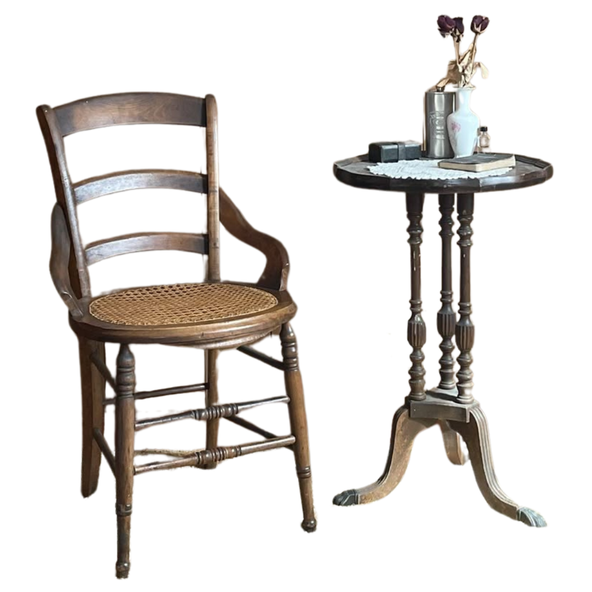
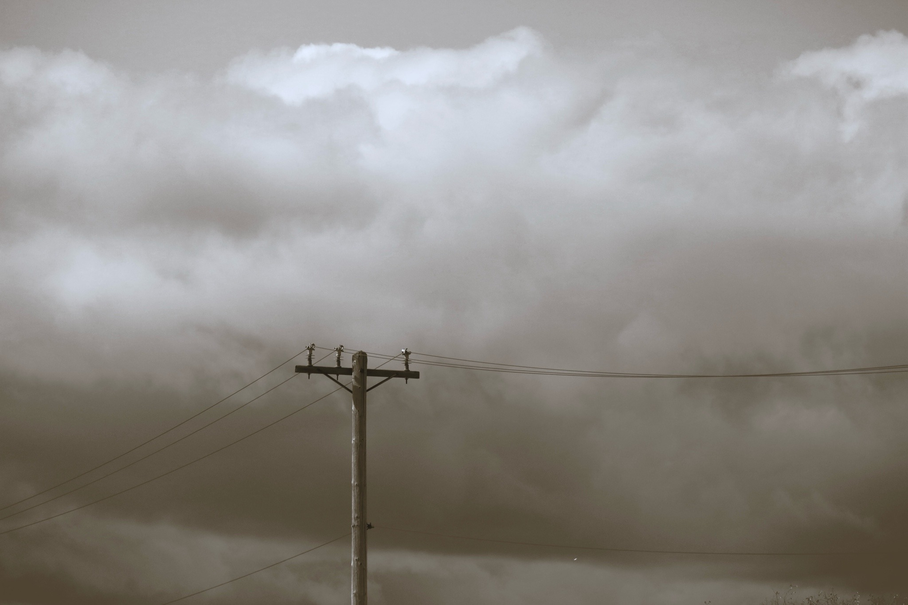
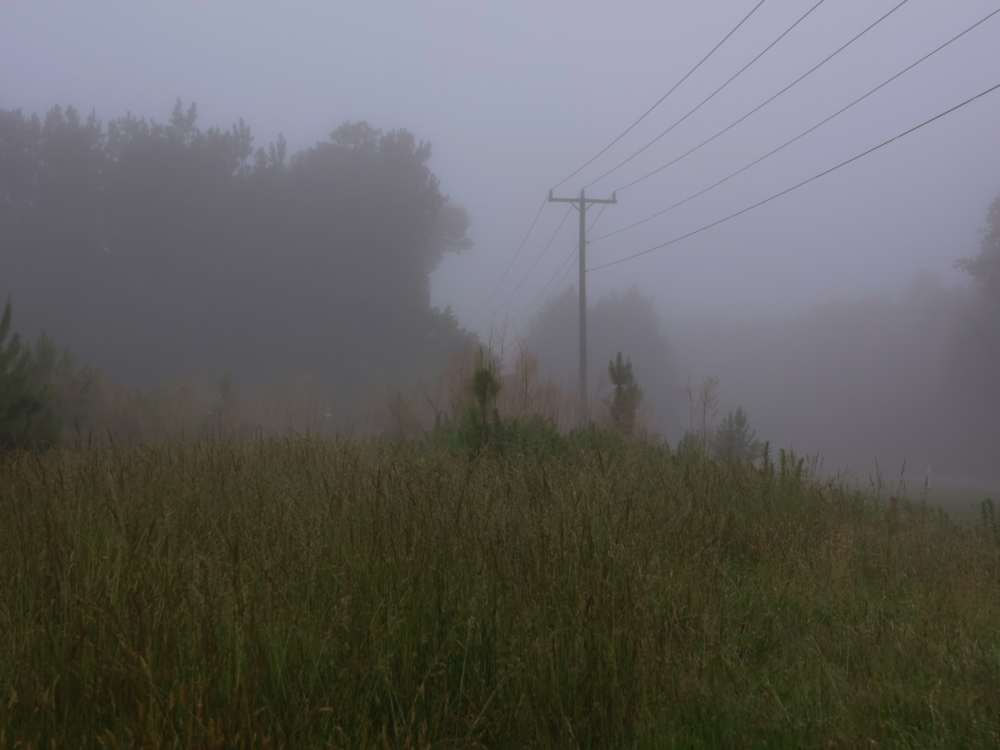
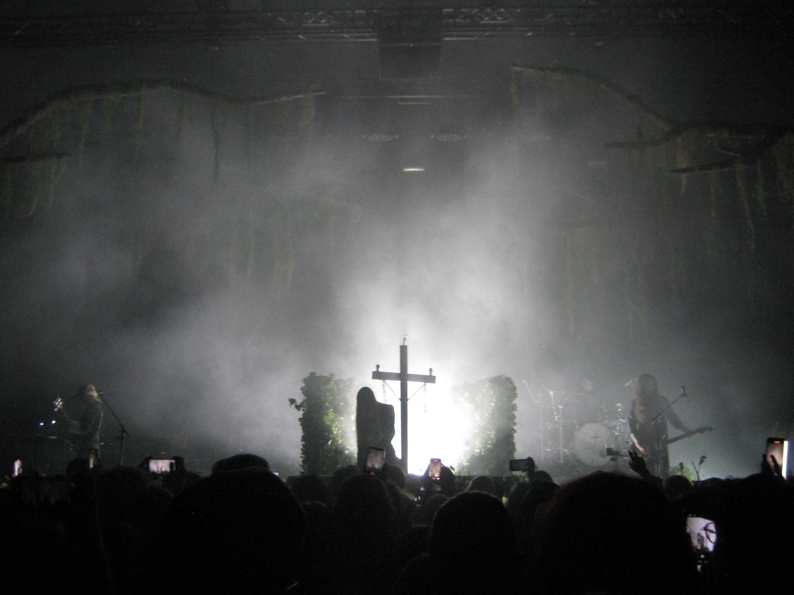
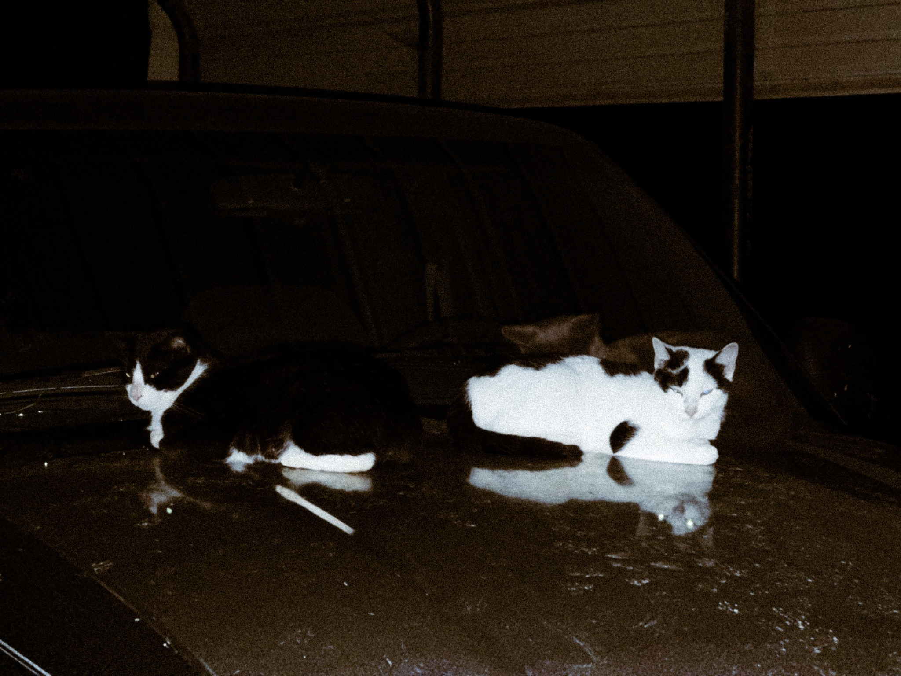
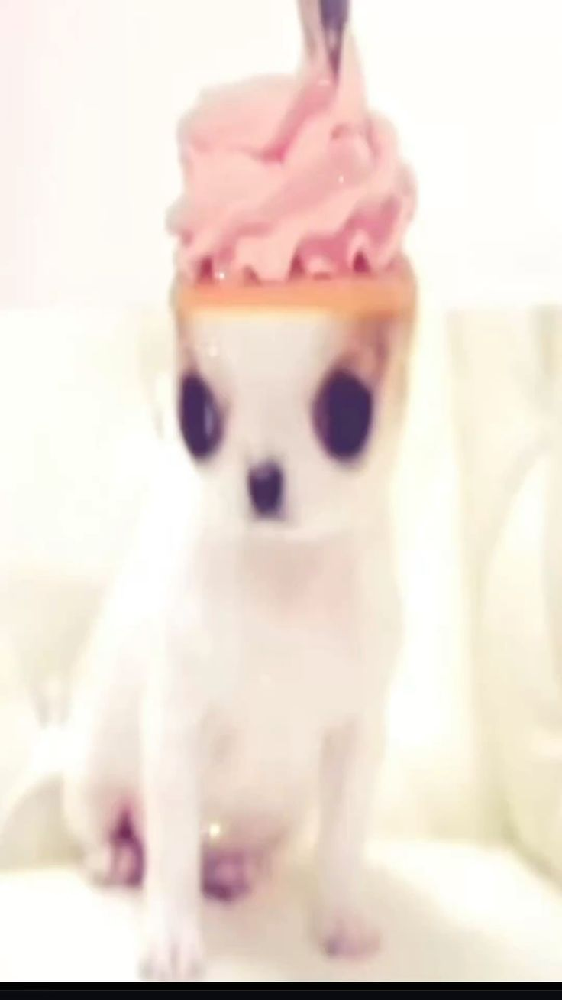
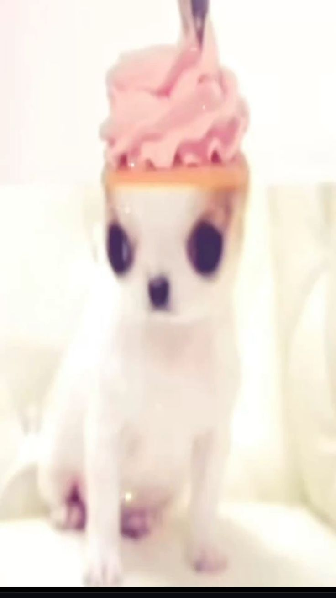

Hello!! Welcome to my Sugar fantasy!! Most links are down right now since I just deleted my entire site.. Uhmmm theres actually not much to say... This site has actually come a long way, I used to only make pink themed sites, which are very cute but I've grown out of it haha!! Most of my site's theme is based on nature and Ethel Cain's music. Aswell as other medias that I've indulged in such as, Twin Peaks, Christiane F, Mysterious Skin ect ect!! This website is 2 years old wow.. I can feed it solid food now.. amazing..
Last Updated:
✦
/
Time until Christmas!
⋆⁺₊❅⋆ ⁺₊❆⋆


Feeling:

Working On: My entire website..
Thinking : How good Nicegirlslumber's art is
Color of the Month
hex : #ffd2a4 ;
Chosen : 11/3
Why? I like peaches




 


hi im alia and im in highschool.. I like ethel cain... i like to eat fruits alot I live in nj and its amazing here you should all come visit. My favourite fruit has to be a mango or like an apple pear. If you dont know or havent aten an apple pear you're missing out